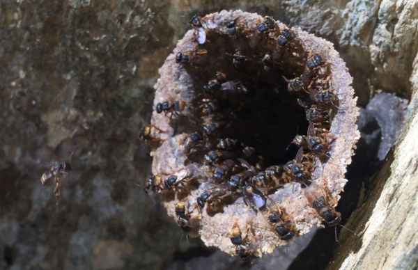
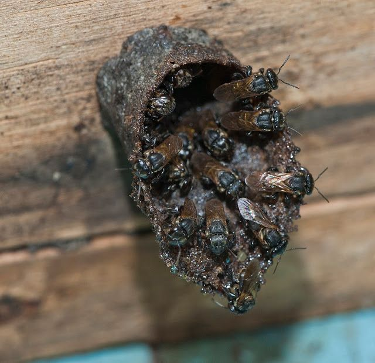

Características Gerais e Hábitos
Arquitetas e Guardiãs: As Mandaguari Pretas constroem ninhos em locais seguros e os protegem com
própolis (Um produto retirado de plantas e arvores, para evitar predadores e microrgânismos). Em seus ataques
liberam feromônios de alerta, que atraem outras abelhas, formando uma defesa em grupo.

Operárias e Polinizadoras: As operárias trabalham incansavelmente coletando néctar, pólen e resina para
alimentar a colmeia e construir o ninho. Ao visitar flores, polinizam plantas e garantem a produção de
frutos.

Mel Especial: Produzem um mel único, com sabor ácido e propriedades medicinais, utilizado em diversos
produtos.
Importância Ecológica: Essas abelhas são essenciais para o equilíbrio ambiental, polinizando plantas e
contribuindo para a biodiversidade. A criação de Mandaguari Preta (meliponicultura) ajuda a conservar a
espécie, gerar renda e educar sobre a importância das abelhas.